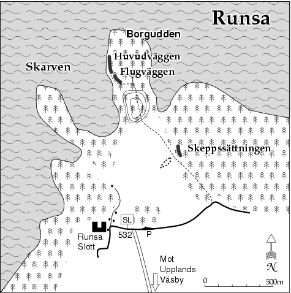

Lat: 59.56914 Long: 17.82467
__TOC__
Vackert belägen vid en vik av Mälaren och med många fina leder i fast och bra klippa är detta berg värt ett besök. Klippan ligger ca 7 km NV om Upplands Väsby och är en av de få klätterklipporna av betydelse norr om Stockholm. Höjden är 10–20 m och den sammanlagda längden är ca 100 m. Bergarten är gnejs/granit av kompakt natur och blanka väggar dominerar. Klättring på klippan är inte tillåten före 1:a maj eftersom den är häckningsplats för berguv.
Sydväst, öppet för solen. Kan vara sipprigt i sprickorna på våren eller efter långvarigt regn.
<div style="width: 355; float: right; margin-left: 10px; padding: 3px; border: solid 1px #cccccc;"> <googlemap width=350 height=300 lat="59.56914" lon="17.82467" zoom="14" type="map" controls="small"> 59.56914,17.82467,
Runsa
</googlemap> </div>
<div style="float: right; margin-left: 10px;"> <slresa> titel=Runsa lat=17824670 long=59569140 </slresa> </div> Kör skyltade vägen mot Runsa, ca 6km. Parkera vid parkeringen efter allén. Följ grusvägen ca 400m till skylt Runsaborg. Följ stigen förbi skeppssättningen upp på fornborgen. Fortsätt över fornborgen och gå ner på andra sidan. Följ stigen ner mot vattnet. Klippan ligger på udden.
Längst tv ligger en kort brant vägg med ett tydligt flak. 10m h om flaket ligger en tydlig dieder, Dubbeldiedret.
40m th om huvudväggen ligger en lägre vägg med en liten nisch en bit upp.
Rakt in i skogen vid skeppssättningen ligger en 30m bred och 6–9m hög klippa. Den har två huvudsakliga väggar varav den vänstra är brantast (95°) men också lägst. Det högra partiet är rätt skuggigt och har en tendens att gro igen. De fyra lederna är väl värda att göra och har mycket klättring för metrarna. Många av lederna har sina krux högst upp vilket gör dem mindre lämpliga som boulderturer, klippan passar nog bäst för en eftermiddags topprepsträning. Alla möjligheter på väggen är ännu inte uttömda.
Kategori:Trad
Kategori:Mix
Kategori:Saknar kolumner
Kategori:Saknar skrivarformatering
Kategori:Stockholm
Kategori:Norra Stockholm